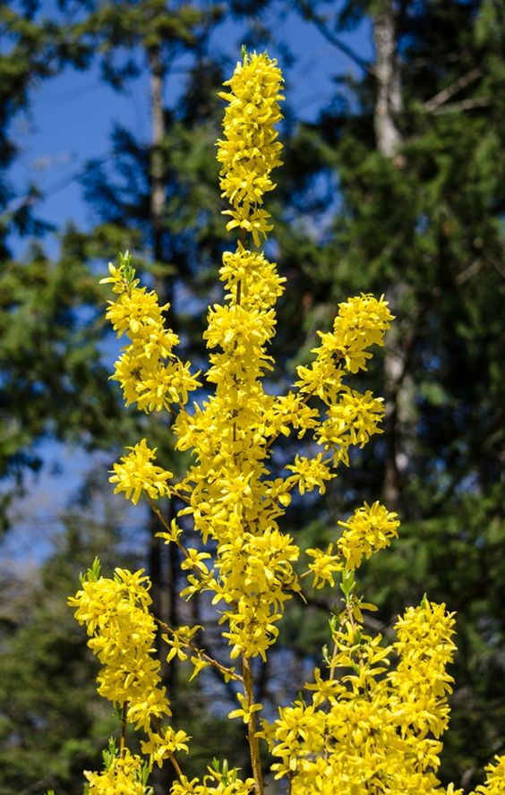

Az aranyvessző (Solidago) egy nagy, színpompás és karakteres virágú növény, amely az Asteraceae családba tartozik. Több mint 100 fajtáját ismerjük, és elterjedt Észak-Amerikában, Európában és Ázsiában is. A név "Solidago" a latin "solidus" (egész) és "ago" (tartok) szavakból származik, valószínűleg a növény gyógyászati tulajdonságaira utalva. Az aranyvesszők jellemzően magas cserjék vagy évelő növények, virágzatuk pedig kiemelkedően sárga és tűzijátékszerű. A virágok kis csészelevelekkel rendelkeznek, és gyűjteményes virágfejeket alkotnak, amelyek tetején kis virágok sűrű csoportjai találhatók. Az aranyvesszők nyáron és kora ősszel virágoznak, és ezek a sárga virágok gyakran vonzzák a méheket és a pillangókat.
Egyes fajták, például az aranyvessző (Solidago canadensis) vagy a tűzpiros aranyvessző (Solidago rugosa), gazdag történelemmel és kultúrával rendelkeznek. A történelmi időkben a sárga virágokat gyakran felhasználták különböző gyógynövényes keverékekben, és néhány őslakos amerikai törzs is alkalmazta őket gyógyászati célokra.
Az aranyvesszők kiváló kertészeti növények is lehetnek, különösen azok számára, akik szeretnék színesíteni kertjüket ősszel virágzó növényekkel. Ezek a növények általában könnyen gondozhatók, szeretik a napfényt és jól alkalmazkodnak különböző talajtípusokhoz.
Fontos megjegyezni, hogy az aranyvesszők néhány területen invazív növényekké válhatnak, különösen akkor, ha a környezeti feltételek számukra kedvezőek. Ezért kertekben és természetes környezetekben is érdemes figyelemmel kísérni azokat a fajokat, amelyeket termeszteni vagy telepíteni szeretnénk.

Jázmin
A jázmin, az illatok és szépség kifinomult jelképe, egy lenyűgöző virág, amely a világ számos részén virágzik és hódítja meg az emberek szívét. A Jasminum növénynemzetség tagjaként több mint háromszáz fajtája létezik, és mindegyikük rendelkezik egyedi vonásokkal és jellegzetességekkel.
A jázminokat gyakran ültetik kertekbe, parkokba, teraszokra és ablakok elé, hogy élvezhessük az intenzív illatukat és a varázslatos virágzatukat. A növények kúszó vagy cserjés formában nőnek, és számos környezetben megélnek, a trópusi területektől a mérsékelt éghajlatig.
A jázmin virágai rendszerint fehérek vagy sárgák, de néhány fajtának rózsaszín vagy piros virágai is lehetnek. Az illatuk különösen erős és kellemes, ami miatt sok kozmetikai és parfümtermékben használják az évezredek óta. Kivonataikat gyakran felhasználják az illatiparban is.
A jázminnak számos kulturális és szimbolikus jelentése is van. Sok kultúrában a jázmin a tisztaság, az ártatlanság és a szerelem jelképe. Esküvői dekorációkban, ünnepi eseményeken és szertartásokon is gyakran megtalálható, mint a szerelem és a boldogság szimbóluma.
A növény gondozása viszonylag egyszerű, de a megfelelő körülményeket igényli a virágzás és a jó egészség érdekében. A jázminok szeretik a napfényes vagy félárnyékos helyeket, jó vízelvezetéssel rendelkező talajt, és rendszeres öntözést. A megfelelő gondozás mellett a jázminok hosszú életűek lehetnek, és szépségükkel, illatukkal éveken keresztül örömet szerezhetnek.
Röviden, a jázmin egy olyan virág, amely nemcsak kertek és parkok díszítője, hanem az emberi kultúrában és életében is mély nyomokat hagyó, emlékezetes növény.
Kecskerágó
A kecskerágó (Ruscus aculeatus) egy örökzöld cserje, amely az aszparáguszfélék (Asparagaceae) családjába tartozik. Más néven cserge vagy cserfa is ismert. Eredetileg az európai erdőkben honos, de ma már számos más régióban is termesztik dísznövényként.
A kecskerágó szokatlan megjelenésű növény, mivel levelei valójában ágak (cladophylls), nem hagyományos levélként ismeretesek. Ezek a törzsből nőnek ki, és szó szerint olyanok, mint a vékony, hegyes tűk. A növénynek zöldes vagy sárgászöld ágai vannak, amelyek télen is megmaradnak.
A kecskerágó kis virágokkal rendelkezik, amelyek inkább észrevétlenek, és a női és hím virágok külön növényeken találhatók. A női virágok a növény közepén találhatók, és később piros bogyóvá fejlődnek, amelyek érés után vörössé válnak. Ezek a bogyók különleges megjelenést kölcsönöznek a növénynek, különösen télen, amikor a többi növény már veszti leveleit.
A kecskerágót gyakran kerti tervezésben használják sövényként vagy talajtakaróként, mivel sűrű ágai és örökzöld lombozata vonzó struktúrát adnak a kertnek. Emellett jól tűri az árnyékot, ami azt jelenti, hogy ideális lehet árnyékos vagy részlegesen árnyékos kertek számára.
Ezen kívül a kecskerágó hosszú életű és könnyen gondozható növény, amely jól alkalmazkodik különböző talajtípusokhoz. A növény rendszeres metszést is tolerál, így formázható vagy karbantartható a kívánt méretben és formában.
A kecskerágó tehát egy különleges és strapabíró növény, amely érdekes megjelenésével hozzájárulhat kertjének sokoldalúságához.
Labdarózsa
A labdarózsa (Rosa rugosa) egy különleges és erős növény, amely a rózsafélék (Rosaceae) családjába tartozik. Ez a robusztus és tűzálló rózsa fajta kivételesen jól alkalmazkodik a változatos éghajlati körülményekhez, és ezért széles körben elterjedt a világ különböző részein, különösen Észak-Ázsia partvidékén és az Északi-földközi-tenger térségében.
A labdarózsa széles, sűrű cserjéket alkot, amelyek magassága elérheti a 1-2 métert. A levelek dúsak, fényesek, és jellegzetesen ráncosak. Az egyik leginkább felismerhető jellemzője azonban a virágai és a termései. A labdarózsa virágai rendszerint rózsaszínűek vagy fehérek, és szorosan tömörülnek a cserje tetején, így egy labdát vagy gömböt formálnak. A virágokat kellemes illatuk teszi még vonzóbbá.
Ezen kívül a labdarózsa termése, azaz a csipkebogyó, szintén figyelemre méltó. A későbbi nyár és kora ősz során a virágok helyére kialakuló piros vagy narancssárga csipkebogyók kiválóan alkalmasak lekvárok és teák készítésére, valamint a téli hónapokban a madarak táplálására.
A labdarózsa kertekben és parkokban való ültetése népszerű, mivel nemcsak díszítő, hanem funkcionális növény is. A tűzállósága és ellenálló képessége a különböző kórokozókkal és kártevőkkel szemben teszi a labdarózsát ideális választássá. Emellett szép, látványos megjelenése és az illatos virágok miatt gyakran alkalmazzák kerti tervezésben és tájépítészetben.
Összességében a labdarózsa egy erős, gyönyörű és hasznos növény, amely számos kertet gazdagít.
Lángvirág
A lángvirág (Anthurium andraeanum) egy különleges és exotikus szobanövény, amely a harkályvirágfélék (Araceae) családjába tartozik. Eredetileg Dél-Amerika esőerdeiben őshonos, azonban a lángvirág a szobanövények között népszerűvé vált szép virágai és dekoratív levelei miatt. A növény nevét a virágok szokatlan formájáról és élénk színéről kapta.
A lángvirág virágai egyedülálló és kifinomult megjelenésűek. Az általában fényes, viaszos megjelenésű, sokszor élénk piros, rózsaszín vagy fehér színű "póknak" tűnő szerkezeteket hoz létre, amelyek valójában a növény virágainak az ún. spáthája és kócsagvirága. A spátha a színes, díszes burok, míg a kócsagvirága a valódi, apró virágokból álló rész. A látványos megjelenés mellett a lángvirág virágai hosszú életűek is lehetnek.
A levelek is karakteresek, általában nagyok, szív alakúak vagy oválisak, és fényesek. A növény törzséből eredő levelek hosszú szárakon helyezkednek el, ami tovább növeli a dekoratív hatást.
A lángvirág szobanövényként való nevelése általában nem túl bonyolult, de néhány gondoskodási szempontot figyelembe kell venni. Szereti a meleg, de nem túl forró környezetet, valamint a magas páratartalmat. Fényigénye közepes, inkább szórt fényt részesíti előnyben, és közvetett napfényben is jól fejlődik. A lángvirágot rendszeresen kell öntözni, de kerüljük a túlzott vízleadást, hogy elkerüljük a túlzott nedvesség miatti problémákat.
A lángvirág nemcsak otthoni környezetben, hanem irodákban és más beltéri helyeken is szép dísznövény lehet. A rendszeres gondozással és a megfelelő feltételek biztosításával a lángvirág hosszú időn keresztül élvezetes látványt nyújt.